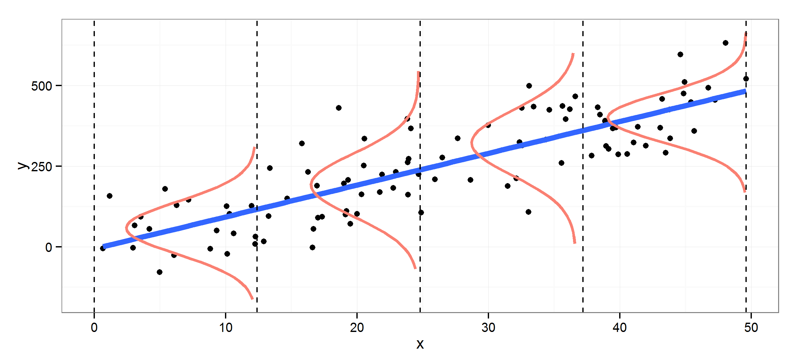

We have introduced conditional expectation in Definition 25.2. Here we reiterate the definition with continuous random variables.
Definition 39.1 (Conditional expectation) Let \(X\) and \(Y\) be continuous random variables with joint density \(f_{X,Y}(x,y)\), \(X\)’s density \(f_X(x)\), and conditional density \(f_{Y|X}(y|x)=\frac{f_{X,Y}(x,y)}{f_X(x)}\). The conditional expectation of \(Y\) given \(X=x\) is \[\begin{aligned}
E(Y|X=x) &= \int_{-\infty}^{\infty}y\ f_{Y|X}(y|x)dy \\
&= \int_{-\infty}^{\infty}y\ \frac{f_{X,Y}(x,y)}{f_X(x)} dy
\end{aligned}\] When the denominator is zero, the expression is undefined.
Note that conditioning on a continuous random variable is not the same as conditioning on the event \(\{X=x\}\) as it was in the discrete case. The probability of the event is zero, but we define the conditional expectation in terms of the density function.
Theorem 39.1 (Law of iterated expectation) For any random variable \(X\) and \(Y\), it holds that \[E(E(Y|X))=E(Y).\]
Proof. Note that \(E(Y|X)=g(X)\) is a function of \(X\). Apply LOTUS: \[\begin{aligned}
E(E(Y|X)) & =\int g(x)f(x)dx\\
& =\int\left(\int yf(y|x)dy\right)f(x)dx\\
& =\int\int yf(y|x)f(x)dydx\\
& =\int y\int f(y,x)dx\,dy\\
& =\int_{-\infty}^{\infty}yf(y)dy\\
& =E(Y).\end{aligned}\]
Theorem 39.2 For any random variable \(X\) and \(Y\), and any function \(g\), we have \[E(g(X)Y|X)=g(X)E(Y|X).\]
Proof. For any specific value of \(X=x\), \(g(x)\) is a constant. Thus, \(E(g(x)Y|X=x)=g(x)E(Y|X=x)\). This is true for all values of \(x\).
Theorem 39.3 (Best predictor) Conditional expectation \(E(Y|X)\) is the best predictor for \(Y\) using \(X\) (minimized the square loss function).
Proof. Let \(g(X)\) be a predictor for \(Y\) using \(X\). We want to find the \(g\) such that minimizes \(E(Y-g(X))^{2}\). \[\begin{aligned}
E(Y-g(X))^{2} & =E(Y-E(Y|X)+E(Y|X)-g(X))^{2}\\
& =E(Y-E(Y|X))^{2}+2\underbrace{E(Y-E(Y|X)}_{E(Y)=E(E(Y|X))}((E(Y|X)-g(X))\\ &\quad+E(E(Y|X)-g(X))^{2}\\
& =E(Y-E(Y|X))^{2}+E(E(Y|X)-g(X))^{2}\\
& \geq E(Y-E(Y|X))^{2}.\end{aligned}\] Therefore, \(E(Y-g(X))^{2}\) is minimized when \(g(X)=E(Y|X)\).
Definition 39.2 (Linear conditional expectation model) An extremely widely used method for data analysis in statistics is linear regression. In its most basic form, we want to predict the mean of \(Y\) using a single explanatory variable \(X\). A linear conditional expectation model assumes that \(E(Y|X)\) is linear in \(X\): \[E(Y|X)=a+bX,\] or equivalently, \[Y=a+bX+\epsilon,\] with \(E(\epsilon|X)=0\). The intercept and the slope is given by \[b=\frac{Cov(X,Y)}{Var(X)},a=E(Y)-bE(X).\]
We first show the equivalence of the two expressions of the model. Let \(Y=a+bX+\epsilon\), with \(E(\epsilon|X)=0\). Then by linearity, \[E(Y|X)=E(a|X)+E(bX|X)+E(\epsilon|X)=a+bX.\] Conversely, suppose that \(E(Y|X)=a+bX\), and define \[\epsilon=Y-(a+bX).\] Then \(Y=a+bX+\epsilon\), with \[E(\epsilon|X)=E(Y|X)-E(a+bX|X)=E(Y|X)-(a+bX)=0.\] To derive the expression for \(a\) and \(b\), take covariance between \(X\) and \(Y\), \[\begin{aligned}
Cov(X,Y) & =Cov(X,a+bX+\epsilon)\\
& =Cov(X,a)+bCov(X,X)+Cov(X,\epsilon)\\
& =bVar(X)+Cov(X,\epsilon)\end{aligned}\] Note that \(Cov(X,\epsilon)=0\) because \[\begin{aligned}
Cov(X,\epsilon) & =E(X\epsilon)-E(X)E(\epsilon)\\
& =E(E(X\epsilon|X))-E(X)E(E(\epsilon|X))\\
& =E(XE(\epsilon|X))-E(X)E(E(\epsilon|X))\\
& =0\end{aligned}\] Therefore, \[Cov(X,Y)=bVar(X)\] Thus, \[\begin{aligned}
b & =\frac{Cov(X,Y)}{Var(X)},\\
a & =E(Y)-bE(X)=E(Y)-\frac{Cov(X,Y)}{Var(X)}E(X).\end{aligned}\]
In practice, we don’t know the true value of \(Cov(X,Y)\) or \(Var(X)\). We have to estimate it with sample observations. Thus, we compute \(\hat b=\frac{\sum_{i=1}^n (x_i-\bar x)(y_i -\bar y)}{\sum_{i=1}^n (x_i - \bar x)^2}\). By definition, \(b\) gives the marginal change of \(E(Y|X)\) with respect to \(X\).

Linear regression is the simple yet powerful modeling tool in statistics. It is useful whenever we want to predict one variable with another. When the assumptions are met (though this is rare), the model gives the conditional expectation — the best predictor. If the assumptions are not met, regression does not give the
# Predict the miles/gallon of a car using its horsepower# Use the built-in dataset `mtcars`data(mtcars)# Fit the linear regression modelmodel <-lm(mpg ~ hp, data = mtcars)# Display the model summarygtsummary::tbl_regression(model)
Characteristic
Beta
95% CI1
p-value
hp
-0.07
-0.09, -0.05
<0.001
1CI = Confidence Interval
# Scatter plot of the dataplot(mtcars$hp, mtcars$mpg, main ="Simple Linear Regression: MPG vs. Horsepower", xlab ="Horsepower (hp)", ylab ="Miles per Gallon (mpg)", pch =16) # Use solid circles for points# Add the regression lineabline(model, col ="red", lwd =2)